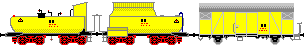

Krümelbahn
Krümelbahn
Ölhilfszug
Allgemeine Informationen
Aus: Polnik, Axel: Die Feuerwehr auf der Schiene - Band 2: Hilfszüge und Bahnfeuerwehren (Seite 85ff.)
Seite 86 oben (Bildunterschrift):
Der Hilfskesselwagen des Rbf Karlsruhe bestand 1981 aus zwei goldgelben Wannentendern (Bahnhofswagen 64 053 und 64 052) und dem grünen Gerätewagen.
Hinter dem Gerätewagen (Bahnhofswagen 64 052) verbirgt sich ein ehemaliger Hilfsgerätewagen der Großherzoglichen Badischen Staatseisenbahn, der noch 1981 vorgefunden werden konnte.
Seite 85 und 86:
Der im Rbf Karlsruhe hinterstellte Tankgerätewagen (Bahnhofswagen 64052, 64051, 64050) erfuhr 1982 eine Modernisierung, bei der wiederum auf Wannentender zurückgegriffen wurde.
Die in Mannheim durch den neuen Kesselwagen 64 670-3 abgelösten Wannentender 64 206 und 64 207 konnten zum Umbau herangezogen werden.
Anlässlich des Umbaus erhielten die Wannentender die goldgelbe Lackierung (Anm.: RAL 1004).
Unter Entfernung des Kohlekastens wurde der 64 206 zum 64 051, der 64 207 behielt seinen Kohelkasten und wurde zum 64 050.
Als Gerätewagen fand ein gedeckter Güterwagen der Bauart Gls 205 Verwendung.
In dieser Kombination bestand der Ölhilfszug Karlsruhe bis 1986. Die beiden Wannentender wurden verschrottet.
Nur der Gerätewagen fand zusammen mit dem neuen Kesselwagen (Anm.: 64674-5) weitere Verwendung.
Der alte Gerätewagen, basierend auf einem alten badischen Hilfsgerätewagen (Anm.: Baden 615), blieb erhalten und kam 1987 zur DGEG nach Neustadt an der Weinstraße.
(...)
Zwischen 1980 und 1986 erfolgte der Ersatz der Wannentender durch vierachsige Kesselwagen. Bei diesen Wagen handelt es sich um die früheren Transportwagen für das Bunkeröl.
Diese Kesselwagen waren zuletzt zum Transport von Heizöl der BA 259/262 zugeordnet.
- Eisenbahn-Magazin 6/85 (Seite 63): Öl-Alarm: Hilfszug für Ölunfälle in neuem Kleid
- Eisenbahn-Magazin 1/06 (Seite 79): Im Dienste der Umwelt - Ölwehrtender in Vorbild und Modell
- Miba-Report Dienstfahrzeuge 1 (Seite 66ff.): Retten und Helfen
- Polnik, Axel: Die Feuerwehr auf der Schiene - Band 2: Hilfszüge und Bahnfeuerwehren (Seite 85ff.)
Verlag Podszun 2014, ISBN 978-3-86133-713-3
-
Fahrzeuge vor der Modernisierung 1982
-
Fahrzeuge nach der Modernisierung 1986
-

Industriemodelle/Bausätze
| Hersteller | Epoche | H0 | TT | N | Bemerkungen |
|---|---|---|---|---|---|
| Liliput | III | L240131 (F) | Wannentender(BR52), Güterwagen Bauart "Oppeln" Beim Vorbild besteht dieser Hilfszug jedoch aus zwei Wannentendern (mit gelbem Dach) sowie einem Gms54 (später Gls205). |
Baubeschreibung

 Bahnhofswagen 64 050
Bahnhofswagen 64 050;){kind=link}
 Bahnhofswagen 64 050Bahnhofswagen 64 051
Bahnhofswagen 64 050Bahnhofswagen 64 051;){kind=link}
 Bahnhofswagen 64 051Bahnhofswagen 64 052
Bahnhofswagen 64 051Bahnhofswagen 64 052;){kind=link}
 Bahnhofswagen 64 052
Bahnhofswagen 64 052in Betrieb seit: 1991
Eine umfangreiche Umbauanleitung ist erschienen im
- Märklin-Magazin 6/89 (Seite 8 bis 14): Hilfszug für Ölunfälle
- Bei der Fa. Spieth gab es:
- unter der Nummer 2004 einen Umbausatz
- unter der Nummer 0061 (vormals Bz6a) einen Beschriftungssatz
- als gedeckter Güterwagen eignet sich ebenfalls der Gms256 von Roco (46256)
- Ergänzung der Stückliste:
Benennung Best.Nr. Griffstangenhalter Weinert 8465 Federpuffer Weinert 8615 Radsätze Roco 40198
(NEM 362, ) entworfen.